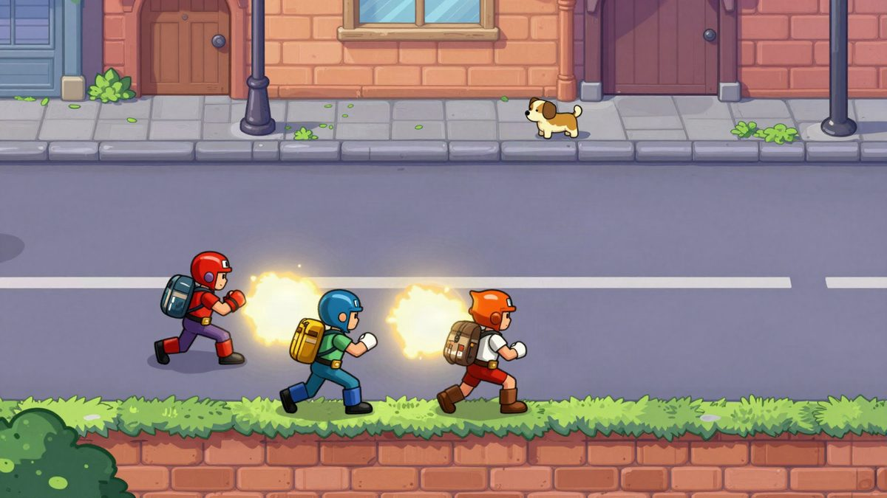
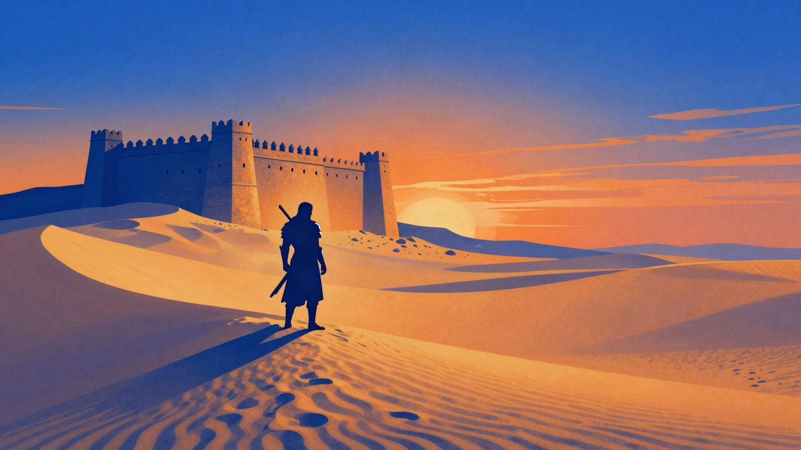

Dokle?, kviz TikTokera Alana Baudoina, u jednom danu odigran je više od 32.000 puta

TikToker i softverski inženjer Alan Baudoin lansirao je dnevnu igru Dokle, u kojoj igrač odgovarajući na osam pitanja putuje od Vukovara do Dubrovnika. Što je odgovor rjeđi među igračima, to prijeđe veću udaljenost. U manje od 24 sata odigrano je više od 32.000 partija.
Alan Baudoin, TikToker i softverski inženjer, predstavio je internetsku igru Dokle?, koja je u manje od 24 sata od lansiranja imala više od 32.000 odigranih partija. Kaže da je to premašilo sva njegova očekivanja.
Igrač kreće iz Vukovara i odgovarajući na osam pitanja iz različitih područja pokušava stići do Dubrovnika. Nije dovoljno znati točan odgovor, jer što je odgovor rjeđi među igračima, to igrač na karti prijeđe veću udaljenost. Rijetkost odgovora određuje i prijevozno sredstvo. Najčešći odgovori znače hodanje i 12 kilometara, a slijede vožnja Bajsom (30 km), HŽ-om (54 km) i Čazmatransom (84 km). Rjeđi odgovori donose vožnju Rimac Robotaxijem (120 km) ili let Croatia Airlinesom (150 km), a najrjeđi vožnju Milanovićevim helikopterom, kojim se prelazi 220 kilometara.
Dokle? je daily game. Set od osam pitanja mijenja se svaka 24 sata, a igrač u pravilu može odigrati jednu partiju dnevno.
Dva tjedna razvoja
Ideja je nastala iz Baudoinova zanimanja za dnevne igre, počevši od Wordlea. Danas igra i Krillion, Moonshot i Farflung. Krillion ga je znao naljutiti jer na engleskom ne bi znao kako se kažu neki odlični odgovori, pa je odlučio napraviti vlastitu varijantu.
Razvoj je trajao dva tjedna. Prvi tjedan otišao je na izradu igre, a drugi na testiranje s desetak prijatelja, ispravljanje pogrešaka i dodavanje novih mogućnosti. Koristio je vibe coding, a većinu kreativnog dijela, kaže, čine njegove ideje.
Kako se računa rijetkost odgovora
Na početku dana svaki odgovor ima procjenu koja se temelji na Claudeovoj procjeni i, gdje je moguće, na broju posjeta Wikipedijinoj stranici tog pojma u zadnjih 365 dana. Ta početna procjena čini između 25 i 75 posto konačne, a ostatak se određuje u stvarnom vremenu prema odgovorima igrača. Kod otvorenijih pitanja veći je naglasak na odgovorima igrača, a kod pitanja koja se mogu rangirati prema mjerljivim podacima na početnoj procjeni.
Baudoin kaže da je sustav postavljen tako da do Dubrovnika stigne otprilike 3 do 5 posto igrača. Za sada stižu uglavnom oni koji su igru više puta odigrali u incognito načinu rada pa znaju odgovore. Na pitanje o hrvatskom otoku najčešći odgovor bila je Jabuka, koju je navelo gotovo 10 posto igrača. Podaci su, upozorava, još nepouzdani jer mnogi igraju više puta dnevno i na različitim uređajima.
Najveći problem je baza odgovora
Najveći izazov nije programiranje nego baza prihvaćenih odgovora. Što je odgovor opskurniji, veća je šansa da ga u bazi nema. Baudoin zato svake večeri provjerava svih osam pitanja za sljedeći dan i dopunjuje ih. Ipak, na pitanju o stranom filmu, s više od 6.000 prihvaćenih odgovora, igrači su upisali još desetke filmova kojih nije bilo u bazi, pa su umjesto nagrade za rijedak odgovor dobili kaznu.
Zato igrači na kraju partije mogu prijaviti odgovor koji smatraju točnim. Takvih prijava stiže oko 3.000 dnevno, a Baudoin kaže da je otprilike polovica besmislena, pa je ručna provjera teško izvediva.
Što slijedi
Prioritet mu je stabilizirati infrastrukturu, koja je prvog dana jedva izdržala navalu igrača, i smanjiti troškove. Trenutačna baza pitanja pokriva oko 45 dana, a u planu su novi modovi i skinovi. Igra već ima karte za Bosnu i Hercegovinu te Srbiju s prilagođenim pitanjima, ali te regionalne verzije za sada nisu razrađene kao izvorna.
Izvor: Bug.hr
Povezani članci
 COO: besplatna igra u pregledniku u kojoj ste robotski golub u 3D Torontu od 630 km²10. studenoga 2026.
COO: besplatna igra u pregledniku u kojoj ste robotski golub u 3D Torontu od 630 km²10. studenoga 2026.
Fable 5.2 je u jednom potezu složio 12-level beat ’em up za četiri igrača9. studenoga 2026.
The Elder Scrolls VI dobio ime: Sentinel, a radnja se seli u Hammerfell3. studenoga 2026.